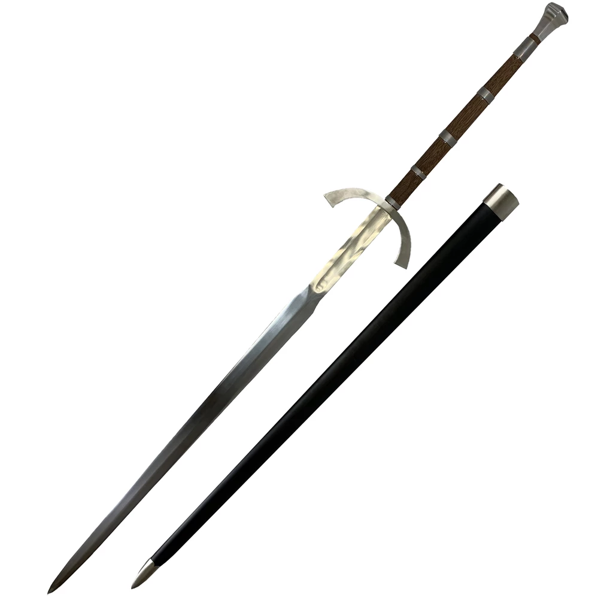

Katana

Volver arriba
| Zweihander |
| Katana |
| Gladius |
|  | La Zweihänder (traducción alemana para "dos manos", también llamada Bidenhänder o Bihänder) conocida asimismo en español como Mandoble es una gran espada usada principalmente en la época renacentista. Aunque ya se utilizaba en Alemania en el siglo XIV, ganó notoriedad durante el siglo XVI al ser el arma empleada por los lansquenetes alemanes del Emperador Maximiliano I. Presumiblemente se usaban en la primera línea de formación de los lansquenetes para conseguir abrir brechas entre las lanzas de los piqueros, cuyas picas eran unas temibles armas tanto para la infantería normal como para la caballería. Volver arriba |
|
La katana (en japonés 日本刀 nihontō, literalmente 'espada japonesa') o catana es una «especie de alfanje de origen japonés» según la RAE, aunque en Occidente esta palabra es usada genéricamente para englobar a todos los sables japoneses. Katana es el kun'yomi o lectura japonesa del kanji 刀; el on'yomi o lectura china es tō.
Volver arriba |
 |
Gladius es un término latino utilizado para designar una espada, el cual se aplica de manera moderna al arma utilizada por las legiones de la Antigua Roma desde el siglo III a. C. hasta el siglo II aproximadamente. Tenía una longitud de aproximadamente medio metro (aunque se podían hacer a medida del usuario) y una hoja recta y ancha de doble filo. De esta palabra deriva «gladiador».
Volver arriba |